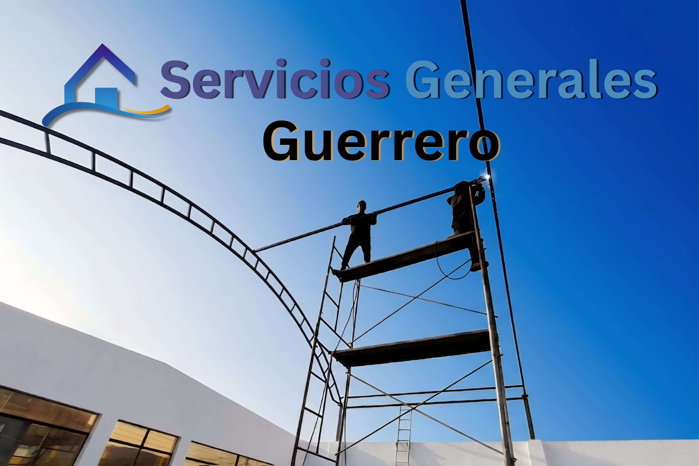
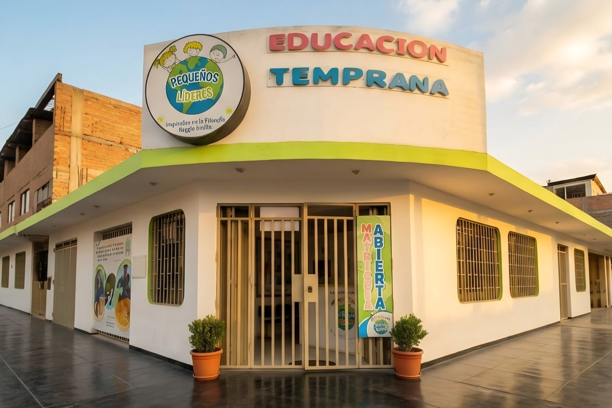

No somos técnicos haciendo páginas web genéricas. Somos tu socio estratégico. Dominamos el código avanzado, el posicionamiento en Maps y el marketing para escalar tu negocio y dominar tu sector.
Estrategias diseñadas exclusivamente para multiplicar la facturación de negocios locales y comerciales.

Posicionamos tu negocio en los primeros resultados de búsqueda de tu zona para captar clientes en piloto automático.

Producción y estrategia de contenido de alto impacto para Reels y TikTok enfocados en ventas mayoristas y conversión.

Arquitecturas web ultrarápidas, optimizadas para móviles y diseñadas con embudos de venta integrados.
Resultados auditables y arquitecturas escalables. No vendemos páginas, construimos activos de conversión.
Arquitectura web desde cero y automatización de canales. Optimización de SEO Local enfocada en captar obras pesadas y clientes corporativos en Comas y Lima Norte.

Ingeniería de geolocalización para dominar búsquedas locales. Auditoría y atracción de tráfico físico directo para Cevichería El Buque y Comercial Ancash.
Desarrollo y gestión integral de infraestructura digital multimarca para dominar nichos de venta mayorista e institucional:
Despliegue técnico de canales digitales y estrategia de posicionamiento hiperlocal en Google Maps para educación temprana. Configuración base optimizada para interceptar intenciones de búsqueda en un radio geográfico específico, transfiriendo la autonomía operativa al equipo interno del cliente.
